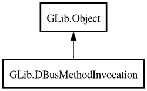

DBusMethodInvocation
Object Hierarchy:

Description:
[
CCode ( type_id =
"g_dbus_method_invocation_get_type ()" ) ]
[
Version ( since =
"2.26" ) ]
public class DBusMethodInvocation :
Object
Content:
Creation methods:
Methods:
- public unowned DBusConnection get_connection ()
- public unowned string get_interface_name ()
- public unowned DBusMessage get_message ()
- public unowned DBusMethodInfo? get_method_info ()
- public unowned string get_method_name ()
- public unowned string get_object_path ()
- public unowned Variant get_parameters ()
- public unowned DBusPropertyInfo? get_property_info ()
- public unowned string get_sender ()
- public void* get_user_data ()
- public void return_dbus_error (string error_name, string error_message)
- public void return_error (Quark domain, int code, string format, ...)
- public void return_error_literal (Quark domain, int code, string message)
- public void return_error_valist (Quark domain, int code, string format, va_list var_args)
- public void return_gerror (Error error)
- public void return_value (Variant? parameters)
- public void return_value_with_unix_fd_list (Variant? parameters, UnixFDList? fd_list)
- public void take_error (owned Error error)
Inherited Members:
All known members inherited from class GLib.Object